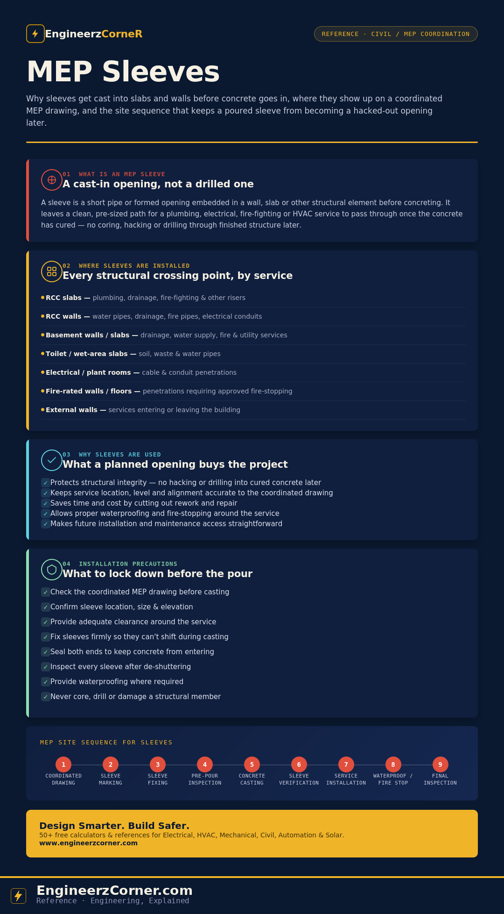

On a coordinated MEP drawing, a sleeve looks like a small circle sitting inside a wall or slab line — easy to skim past. On site it's the reason a plumber, electrician or fire-fighting contractor can run their service straight through a concrete element without a hammer drill in sight. Get the sleeve schedule wrong, or skip it, and every one of those crossings turns into a structural repair problem instead of a five-minute pipe pass-through.

What an MEP sleeve is, where it's installed, why it's used, and the site sequence that gets it right.
1. What is an MEP sleeve
A sleeve is a short pipe, duct or formed opening built into a wall, slab, beam or other structural element before concreting or finishing, so an MEP service can pass through it once the structure is complete. It isn't the service itself — the sleeve is just the pre-planned void; the plumbing, cable or duct gets pulled through it afterward, usually with clearance space and a fire or waterproofing seal added around it.
Before concreting, the sleeve is fixed to the reinforcement cage in the exact position the coordinated drawing calls for. After concreting and de-shuttering, what's left is a clean, ready-made opening — not a mark for someone to core through later.
2. Where sleeves are installed
Sleeves appear anywhere a building service needs to cross a structural boundary. The table below covers the seven locations that come up on almost every commercial project.
| Location | Typical services |
|---|---|
| RCC slabs | Plumbing risers, drainage, fire-fighting mains and other vertical services |
| RCC walls | Water pipes, drainage, fire pipes, electrical conduits |
| Basement walls / slabs | Drainage, water supply, fire and general utility services |
| Toilet / wet-area slabs | Soil, waste and water pipes |
| Electrical rooms / plant rooms | Cable and conduit penetrations |
| Fire-rated walls / floors | Any service penetration, closed out with approved fire-stopping |
| External walls | Services entering or leaving the building |
Fire-rated walls and floors aren't a separate sleeve type — they're a condition that applies on top of any of the locations above, and it's the one location where the sleeve is genuinely unfinished until fire-stopping is in place.
3. Why sleeves are used
- ✓Protects structural integrity — no hacking, coring or drilling into cured concrete to make room for a service that was never planned for.
- ✓Ensures accuracy — the opening lands exactly where the coordinated drawing puts it, at the right size, level and alignment.
- ✓Saves time and cost — a fixed sleeve is a five-minute job before the pour; a missed one is a structural engineer's sign-off and a repair crew after it.
- ✓Allows proper waterproofing and fire-stopping — sealing a formed, correctly-sized opening is straightforward; sealing an irregular cored hole rarely is.
- ✓Keeps future access easy — the service position is documented and predictable for maintenance, replacement or future tie-ins.
4. Installation precautions
- Check the coordinated MEP drawing before casting starts
- Confirm sleeve location, size and elevation against that drawing
- Provide adequate clearance around the service, not a tight fit
- Fix sleeves firmly to the rebar cage so they can't shift during the pour
- Seal both ends before the pour to keep concrete from entering the sleeve
- Inspect every sleeve after de-shuttering, before it's built over
- Provide waterproofing at wet-area and external penetrations where required
- Provide approved fire-stopping wherever the sleeve crosses a fire-rated barrier
- Never core, drill or otherwise damage a structural member to fix a missed sleeve
Site sequence for sleeves
- 1Coordinated drawingSleeve positions are finalized in the MEP coordination drawing before any work on site begins.
- 2Sleeve markingPositions are marked out on the shutter or rebar cage against that drawing.
- 3Sleeve fixingSleeves are fixed firmly to the reinforcement so they hold position and level through the pour.
- 4Pre-pour inspectionLocation, size, level and fixing are checked and signed off before concrete is placed.
- 5Concrete castingConcrete is poured and compacted around the fixed sleeves.
- 6Sleeve verificationAfter de-shuttering, every sleeve is checked for position, damage and blockage.
- 7Service installationThe actual pipe, cable or duct is pulled through the sleeve.
- 8Waterproofing / fire-stoppingThe annular gap around the service is sealed per the waterproofing or fire-rating requirement.
- 9Final inspectionThe completed penetration is checked off against the coordinated drawing and closed out.
Key takeaways
- ✓A sleeve is a cast-in opening, not a drilled one — it exists to be planned before the pour, not fixed after it.
- ✓Sleeve locations follow the service, not the other way around — slabs, walls, basements, wet areas, plant rooms, fire-rated barriers and external walls each carry their own clearance and sealing needs.
- ✓A sleeve through a fire-rated element isn't finished until it's closed with approved fire-stopping.
- ✓The nine-step sequence — drawing, marking, fixing, inspection, casting, verification, installation, sealing, final inspection — is what keeps a sleeve schedule out of the rework column.